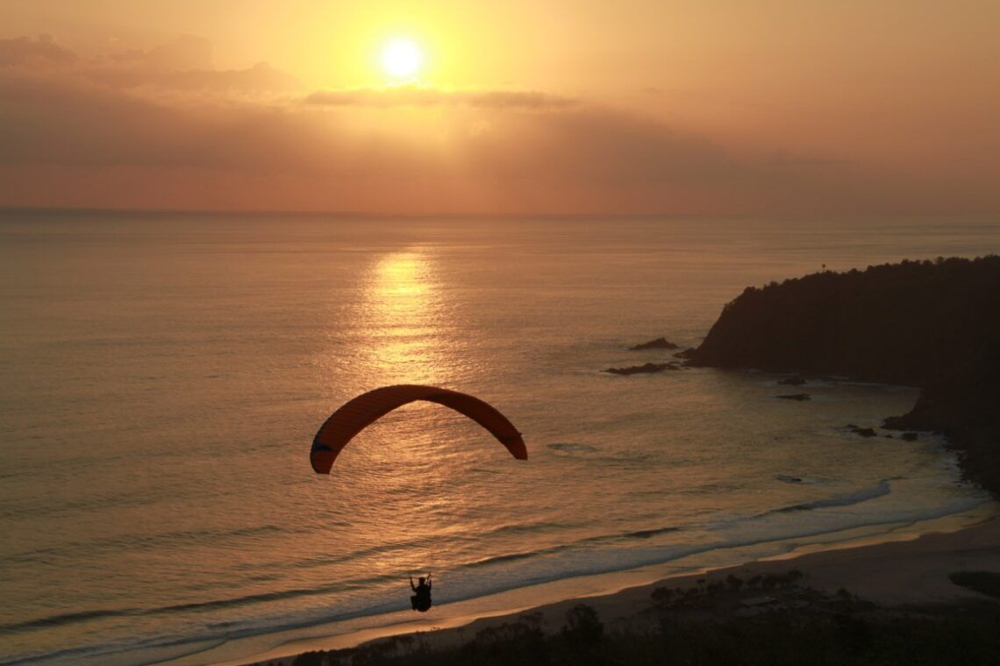

Bali adalah destinasi paling terkenal di Indonesia — terutama pantainya. Tapi tau ga sih, sebenernya Malang juga punya banyak pilihan pantai yang bisa kamu kunjungi? Mulai dari pasir putih hingga air laut yang jernih, Malang punya deretan pantai tersembunyi yang memukau.
Eits, jangan salah — pemandangan dan ombaknya juga tidak kalah indah dengan pantai milik Bali. Untuk itu, berikut kami rangkum tiga pantai yang bisa kamu kunjungi selama di Malang. 🌊
Daftar Pantai
🏖️ Pantai #1
Pantai Modangan

🏖️Pantai Modangan
Tambahkan foto di sini — lihat panduan di komentar HTML
📷 Pantai Modangan, Donomulyo